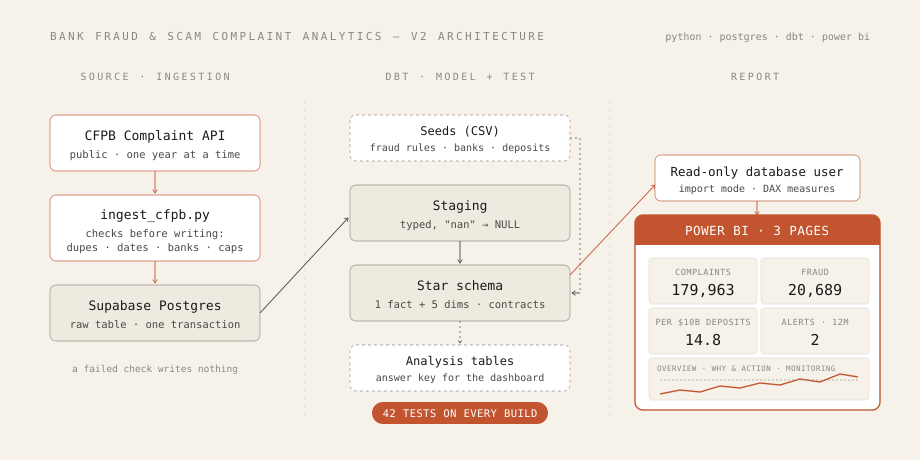
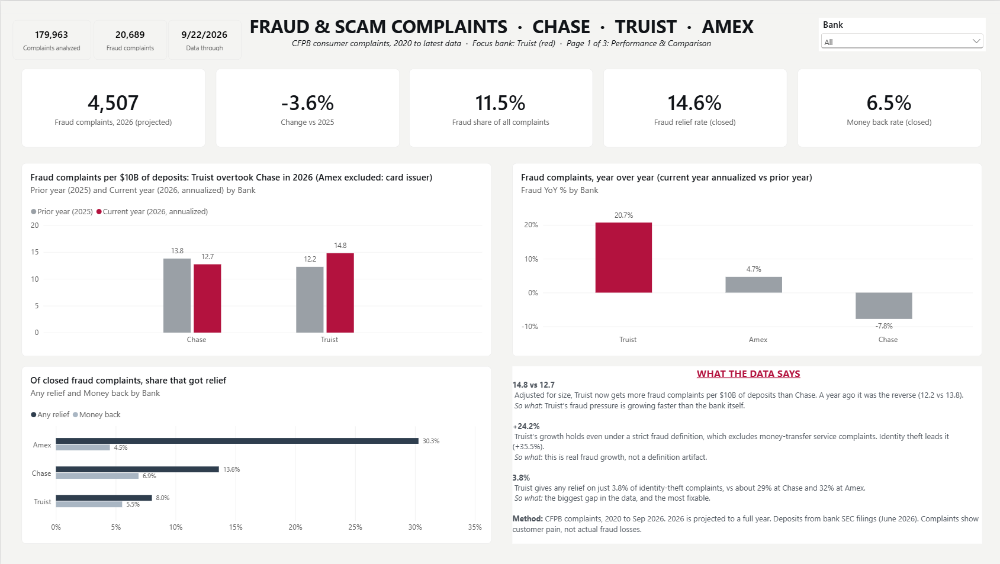
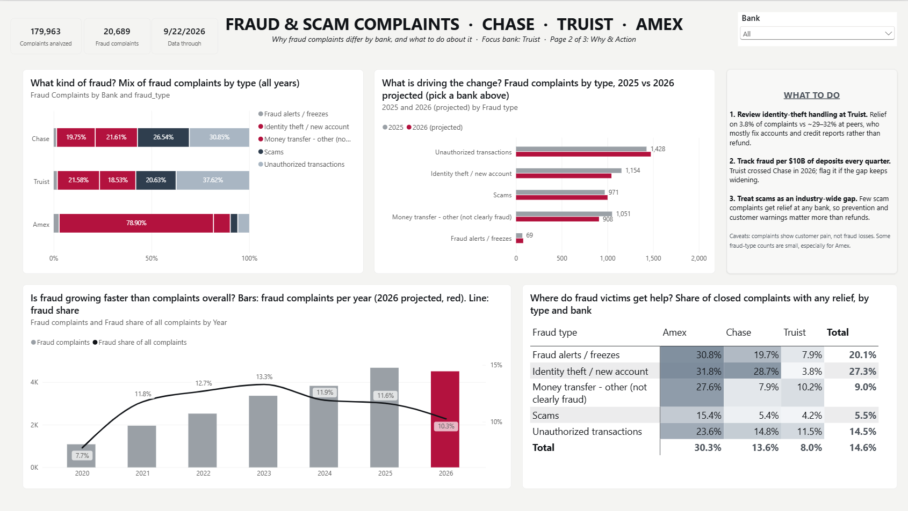
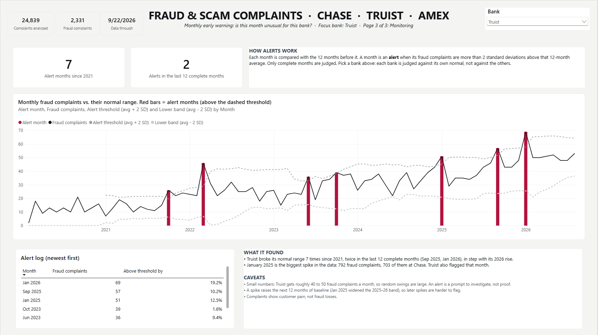

I pulled every public CFPB complaint about Truist, JPMorgan Chase and American Express from 2020 to 2026, modeled it with dbt in Postgres, tested every layer, and built a three-page Power BI dashboard on top. The short answer: adjusted for deposits, Truist passed Chase in 2026.
This one started after touring Truist's Cyber Fusion Center in Atlanta and reading how much peer-to-peer payment fraud — Zelle scams especially — has become one of the biggest live concerns in banking through 2025–2026. I wanted to see what the actual numbers looked like, and specifically how Truist compared to the other side of that Zelle exposure.
Truist and JPMorgan Chase both co-own Early Warning Services, the company that operates Zelle. American Express isn't a Zelle bank at all, which makes it a useful contrast. So instead of a generic complaint-volume dashboard, I focused on fraud and scam complaints in the public CFPB Consumer Complaint Database.
This is the second version. The first one ran on Microsoft Fabric inside an organization's tenant, so nobody outside could open it. I rebuilt it on tools anyone can run: a Python script, a free Postgres database, dbt and Power BI Desktop. The rebuild also let me fix what I didn't like about v1, mainly that it compared raw complaint counts, which mostly tells you Chase is big.

"nan" into proper empty values.fct_complaints with one row per complaint, plus date, bank, product, issue and geography tables.
The script runs four checks before it touches the database: no duplicate complaint IDs, no
missing dates, only the three expected banks, and no year cut off by CFPB's export limit. If any
check fails, it stops and writes nothing. There's also a --dry-run flag that downloads
and checks without loading.
When the checks pass, the load replaces the raw table inside a single transaction. If something goes wrong halfway, Postgres rolls it back and the old data is still there. You never end up with half a table.
with engine.begin() as conn: # commits only if everything inside succeeds before = conn.execute(text(f"SELECT COUNT(*) FROM {SCHEMA}.{TABLE}")).scalar() conn.execute(text(f"TRUNCATE {SCHEMA}.{TABLE}")) df.to_sql(TABLE, conn, schema=SCHEMA, if_exists="append", index=False, dtype=dtypes, method="multi", chunksize=5_000) after = conn.execute(text(f"SELECT COUNT(*) FROM {SCHEMA}.{TABLE}")).scalar() if after != len(df): raise RuntimeError(f"row count mismatch after load: {after} vs {len(df)}")
CFPB doesn't label complaints as fraud, so I had to decide. A complaint counts as fraud-related when its issue matches one of 10 hand-reviewed rules, or when it's about a money transfer or virtual currency product.
In v1 those rules were buried inside a SQL CASE statement. In v2 they live in a small
CSV file that dbt loads as a table. Anyone can read the definition without reading SQL, and every
change to it shows up in the project history.
match_on,value,fraud_type sub_issue,Transaction was not authorized,Unauthorized transactions sub_issue,Account opened without my consent or knowledge,Identity theft / new account sub_issue,Debt was result of identity theft,Identity theft / new account issue,Fraud or scam,Scams issue,Problem with fraud alerts or security freezes,Fraud alerts / freezes # ...5 more rules
The grey category is labeled honestly: money-transfer complaints that aren't clearly fraud. I checked the main findings with and without it, so the conclusions don't depend on it.
Chase gets far more fraud complaints than Truist, but it also holds about 6.6 times more deposits. Comparing raw counts just tells you Chase is bigger. So I divided fraud complaints by each bank's deposits, taken from their quarterly SEC filings as of June 30, 2026, with the source written next to every number in the seed file.
American Express is left out of this one view on purpose. It's mainly a card company, so its deposits understate how many customers it serves, and dividing by them would make it look far worse than it is. Amex is in every other view.
Most of the work went into checking, because a dashboard is only useful if you can trust it.
Fraud complaints per $10B of deposits, 2026 projected: Chase 12.7, Truist 14.8. In 2025 Chase was still higher (13.8 vs 12.2).
Even after removing the "not clearly fraud" category, Truist's fraud complaints are on pace to grow 24% this year. Over the same period, Chase's fraud complaints are down about 8%.
Identity-theft complaints add the most to Truist's increase, though unauthorized transactions are still its largest fraud category overall.
Of closed identity-theft complaints, 3.8% at Truist ended with some kind of relief. At Chase it was about 29%, at Amex about 32%.
Truist went above its normal range in 2 of the last 12 complete months: September 2025 and January 2026.
Across the three banks it went from 7.7% in 2020 to 13.3% in 2023, then eased to about 10%. Overall, 11.5% of complaints are fraud-related.
Each page answers one question. Overview: how big is fraud, and how do the banks compare once size is taken into account? Why & Action: what kinds of fraud drive the change, and where do victims get help? Monitoring: is this month unusual for this bank?



The monitoring page compares each month with the 12 months before it. If a month lands more than two standard deviations above that average, it's flagged. The baseline only counts when a full 12 months of history exist, and the current partial month is left out so it can't look artificially low.
VAR cur = MAX ( dim_date[month_start] ) VAR prior12 = CALCULATETABLE ( VALUES ( dim_date[month_start] ), REMOVEFILTERS ( dim_date ), dim_date[month_start] >= EDATE ( cur, -12 ), dim_date[month_start] < cur ) RETURN IF ( COUNTROWS ( prior12 ) = 12, -- only with a full year of history AVERAGEX ( prior12, VAR m = dim_date[month_start] RETURN CALCULATE ( [Fraud Complaints], REMOVEFILTERS ( dim_date ), dim_date[month_start] = m ) ) )
.pbip), so the report and model are text
files and every change to a measure or visual shows up in the history like code. The data itself is
never committed. Everything is public:
github.com/gonzalolachica/bank-fraud-complaint-analytics-v2.